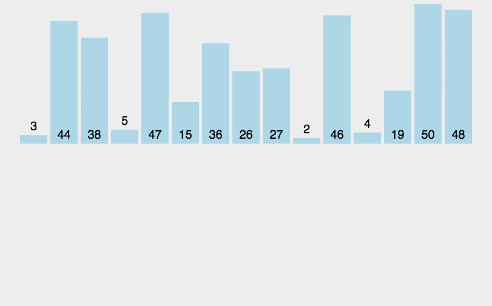

十大经典排序算法
时间/空间复杂度

分类
交换排序
- 冒泡排序
- 快速排序
插入排序
- 直接插入排序
- 希尔排序
选择排序
- 简单选择排序
- 堆排序排序
归并排序
基数排序
排序动画
- https://visualgo.net/zh/sorting
- https://www.webhek.com/post/comparison-sort.html
交换数组元素
public class Utils {
public static void swap(int[] arr, int a, int b) {
int temp = arr[a];
arr[a] = arr[b];
arr[b] = temp;
}
}
1.冒泡排序
两两比较，比较相邻两个元素，如果第一个比第二个大，就交互位置。
双层for循环，内层循环用来交互位置，外层循环用来控制循环次数。
每次循环后，最大的那个元素就会移动至末尾，所以内存循环次数可以为数组length减去外层循环的当前index。

public static void bubbleSort(int[] arr) {
int len = arr.length;
// 循环次数为数组容量
for (int i = 0; i < len; i++) {
// 循环len-i次，因为完成一次循环，最大的元素就会被移动至末尾
for (int j = 0; j < len - i; j++) {
// 比较当前位置和下一位谁大
if (j < len - 1 && arr[j] > arr[j + 1]) {
// 交互位置
swap(arr, j, j + 1);
}
}
}
}
2.快速排序
分治和递归
- 从数组或队列中选出一个元素，称之为
基准(pivot)。 - 开始排序，比基准小的就放到基准的前面，比基准大得就放在基准的后面，相同的可以放在任意一边。一次分区完成后，基准就位于数列的中间。所以这个也称之为
分区(parttion)操作。 递归的把小于基准和大于基准的子数列排序，也就是进行上一步的操作。

3.插入排序
- 将未排序数列的第一个元素看做一个有序序列，从第二个元素到最后一个元素看成未排序序列。
- 从头至尾遍历未排序序列，将扫描到的每个元素插入有序序列适当的位置。

private static void insertionSort(int[] arr) {
int length = arr.length;
// 下标从1开始，因为0下标已经被当成有序序列
for (int i = 1; i < length; i++) {
int current = arr[i];//当前要插入的元素
int preIndex = i - 1;//未排序序列的index
// 如果未排序的元素大于当前要插入的元素，继续执行循环
// 并且preIndex的下标要不小于0
while (preIndex >= 0 && arr[preIndex] > current) {
arr[preIndex + 1] = arr[preIndex];// preIndex的元素后移一位
preIndex--;// 已排序序列下标减一，继续比较
}
// 当preIndex下标的元素不大于current时，就插入在preIndex后面
arr[preIndex + 1] = current;
}
}
4.希尔排序
5.选择排序
-
从数列中选择最大或最小的那个元素，放到首位或末尾。
-
重复上一步骤，但是这里的首位或末尾是指不包含上一步已经占坑了的首位或末尾。

private static void selectionSort(int[] arr) {
int length = arr.length;
int minIndex = 0;
for (int i = 0; i < length; i++) {
minIndex = i;
for (int j = i + 1; j < length; j++) {
if (arr[minIndex] > arr[j]) {
minIndex = j;
}
}
swap(arr, i, minIndex);
}
}
内层for循环遍历一次数列找出最小或最大的那个元素，外层for控制循环次数，保证每个元素都被比较到。
6.堆排序
7.归并排序
8.基数排序
9.计数排序
10. 桶排序
参考
-
《大话数据结构》